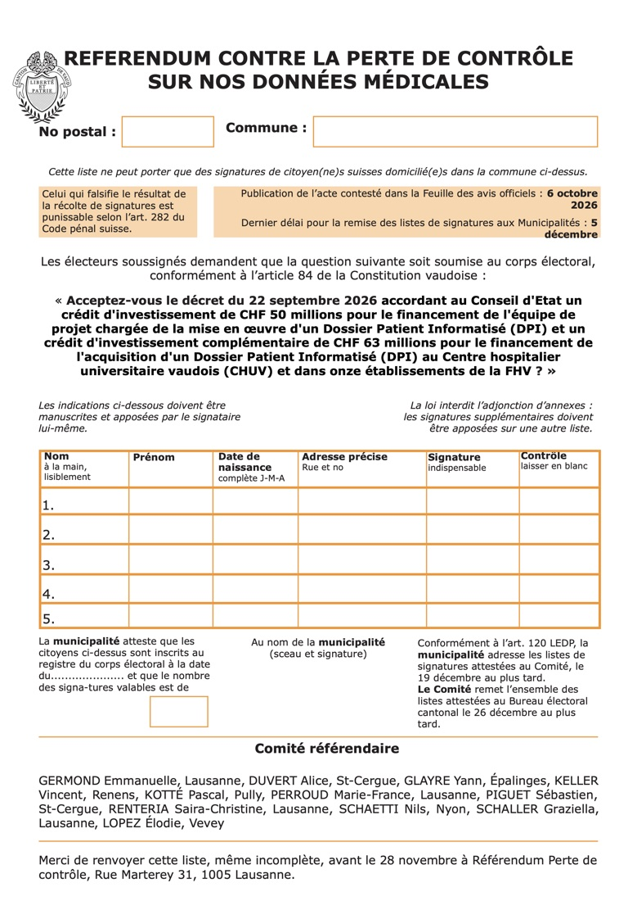

Référendum cantonal vaudois contre la perte de contrôle sur nos données médicales
Qui contrôle nos données médicales ?
Voir les réponses →Le Grand Conseil a validé le choix du logiciel américain Epic pour le dossier patient du CHUV et de 11 établissements de la FHV. Une loi américaine, le CLOUD Act, peut obliger Epic à livrer les données qu'elle contrôle, même stockées en Suisse. Et Epic pourra accéder aux données, y compris depuis l'étranger, pour la maintenance.
Comité citoyen et transpartisan : des député·e·s de cinq partis, de gauche à droite, une médecin et des spécialistes du numérique.
Ce que décide votre signature
Sur quoi vote-t-on ?
Le référendum vise le décret du 22 septembre 2026 : 113 millions de francs de crédits de l'État pour le projet Epic, dans un projet de 207,6 millions au total. Avec 12 000 signatures valables, la population vaudoise tranchera.
Le remplacement de l'ancien logiciel aura lieu de toute façon : la question est de savoir avec quel système.
207,6Mio CHF
millions de francs pour le projet Epic12Établissements
établissements concernés : le CHUV et 11 établissements de la FHV (hôpitaux régionaux et institutions de soins)2018Loi US
l'année du CLOUD Act, la loi américaine à laquelle Epic est « a priori soumis », selon le canton lui-même12 000Signatures
signatures valables en 60 jours pour que le peuple vaudois décideOù peuvent aller vos données ?
Le même dossier, deux architectures.
- Vous
- Hôpital vaudois
- Données stockées en Suisse, dans le logiciel d'Epic, éditeur américain
- Accès de maintenance depuis l'étranger
- CLOUD Act (loi américaine, 2018)
- Autorités américaines : peuvent exiger ce qu'Epic contrôle
- Vous
- Hôpital vaudois
- Système sous contrôle vaudois (chiffré, code vérifiable)
- Arrêt à la frontière suisse : aucun accès extérieur sans l'accord du canton et des patients
Choisissez ce qui compte pour vous.
L'essentiel en 4 comparaisons
Tous les pointsComment signer
Avant le 28 novembre, par la poste, sans timbre.

La vraie feuille, en A4. Cliquez pour la télécharger.- VérifiezVous êtes de nationalité suisse, avez 18 ans révolus et êtes domicilié·e dans le canton de Vaud.
- Téléchargez la feuilleEn A4 ou A5, avec bordereau-réponse : pas besoin de timbre.
- Une feuille = une communeÉcrivez-la en haut. Autre commune, autre feuille.
- Chacun·e signe soi-mêmeRemplissez votre ligne à la main, une seule fois. Si vous ne pouvez pas écrire, un·e autre électeur·rice peut vous aider et signe « p.o. ». Une feuille incomplète compte aussi.
- Postez avant le 28.11Le port est payé par le comité. Si vous collez vous-même un timbre, vous lui faites économiser. Délai officiel : 5 décembre.
Feuille A5 (PDF)Pas d'imprimante ? Demandez une feuille.
Étape suivante : faites signer 3 personnesFlyer à imprimer, vidéo ou carrousel, prêts à partager→Comment aider
Récoltez une heure
Sur un marché ou devant une gare. Kit fourni et briefing de 20 minutes.
Je m'inscrisFaites signer 3 personnes
Famille, collègues, voisin·e·s. Partagez les carrousels, le flyer ou la chaîne WhatsApp.
Flyers, vidéos, carrouselsFaites un don
Par TWINT ou autre moyen, via RaiseNow. Les dons passent pour l’instant par le compte du Parti pirate, mis à disposition du comité.
Faire un donLe comité
Comité citoyen et transpartisan
- Emmanuelle GermondSociété Numérique · contact presse
- Alice Duvert
- SGKSabine Glauser KrugDéputée Les Vert·e·s
- Yann GlayreDéputé UDC
- Vincent KellerDéputé POP
- Pascal KottéCloudReady
- Élodie LopezDéputée Ensemble à Gauche
- MFPMarie-France Perroud
- Sébastien PiguetSwissLinux
 Saira-Christine RenteriaMédecin
Saira-Christine RenteriaMédecin Samuel RenteriaIngénieur systèmes IA
Samuel RenteriaIngénieur systèmes IA- Nils SchaettiHTTPS-VD
- Graziella SchallerDéputée Vert'libéraux
Avec le soutien de
Le secret médical n'est ni de gauche ni de droite.